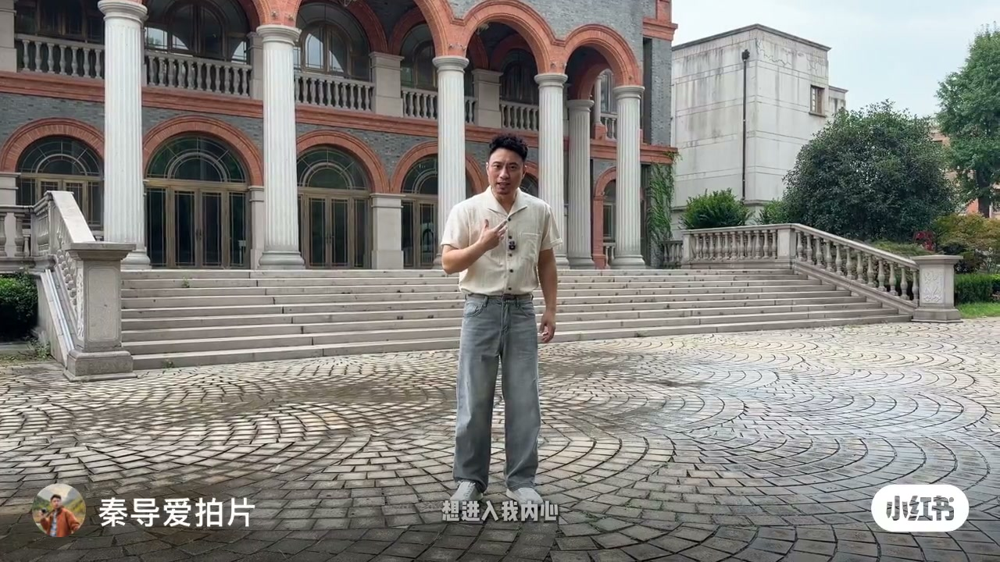
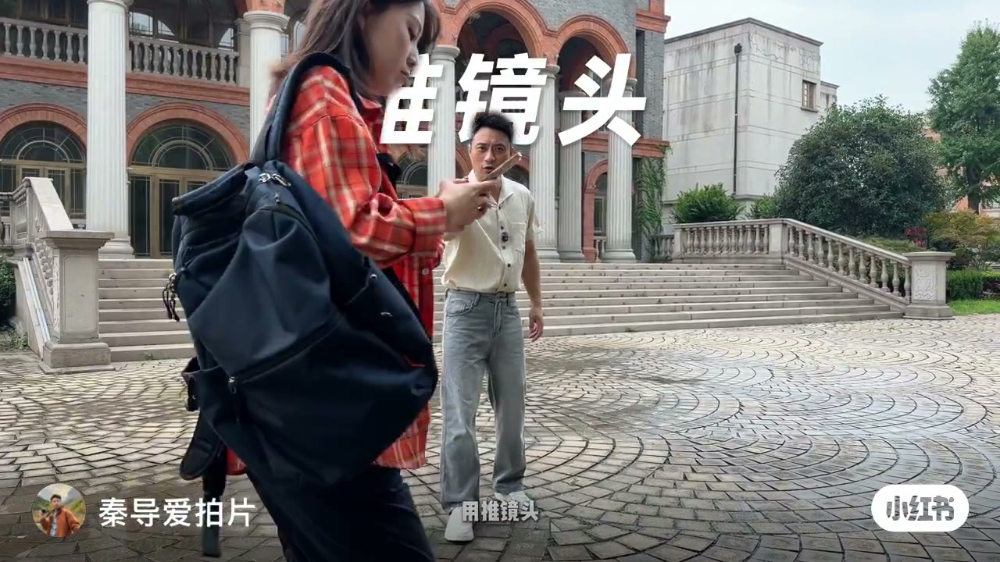
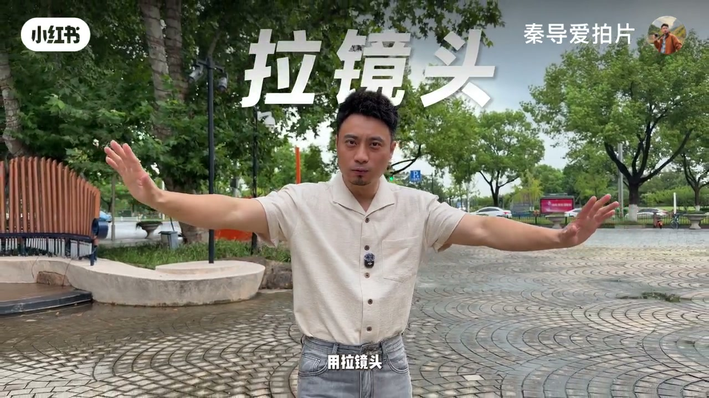
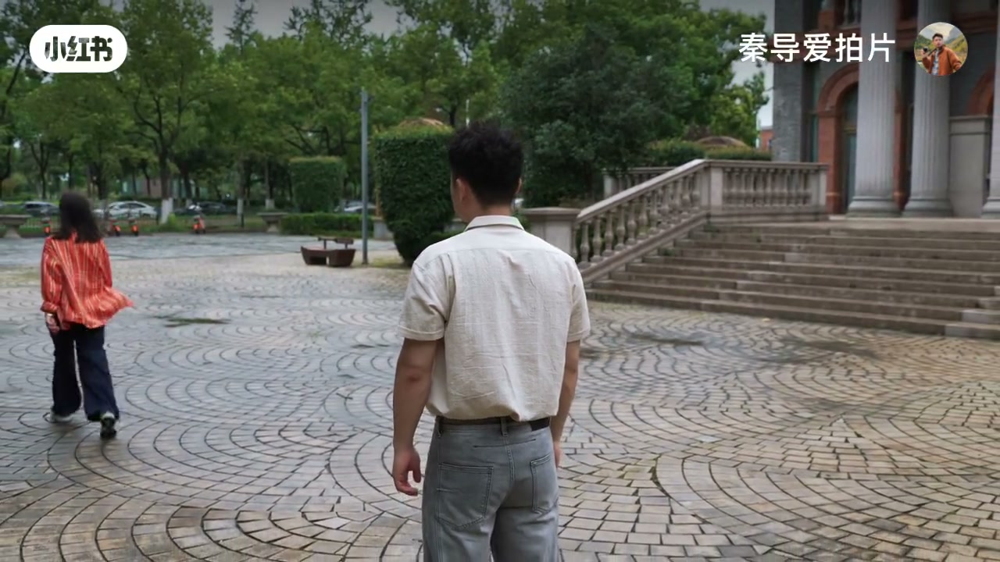
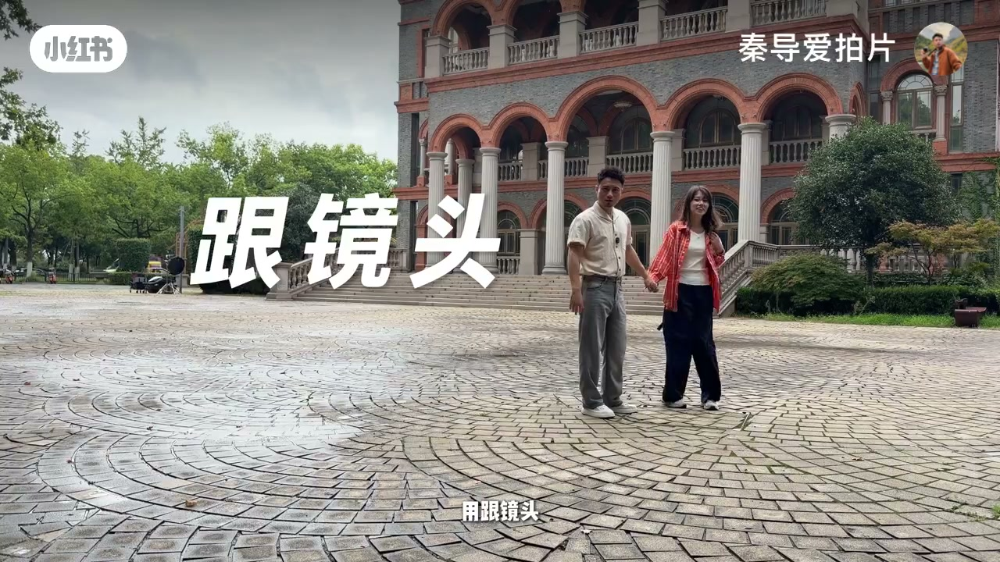
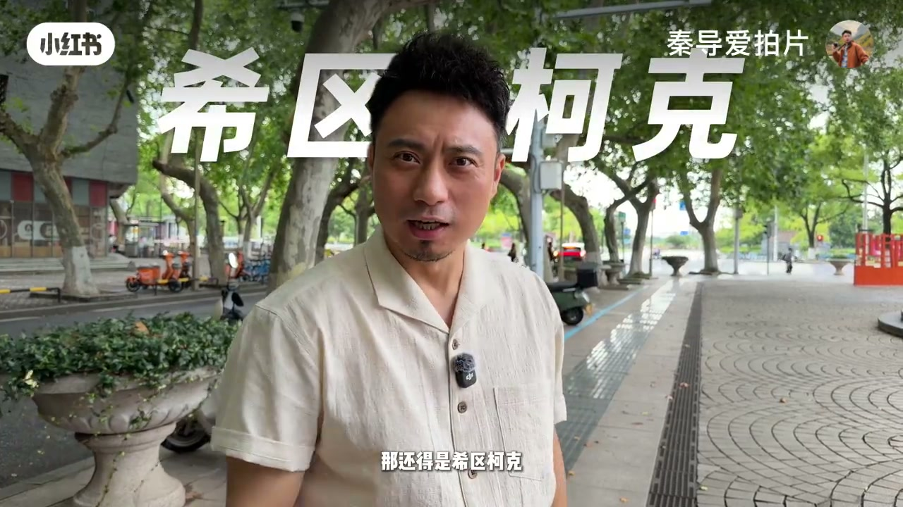

内容要点
知识结构
钩子句「想进入我内心」直接对应推镜头：镜头逼近主体，空间压缩成亲密感。
自问「怎么表现孤独呢」后给出拉镜头：主体与环境拉开，人被留在更大的空场里。
「怎么样增加代入感」→「用跟镜头」；画面示范男女牵手同行，镜头贴着人物走。
「想要表现惊喜或者惊吓」时点名「那还得是希区柯克」，并以搭讪对话演示心理失稳感。
字幕收束「运镜是有情绪的」，并以「都学会了吗」收尾；与标题、笔记「不要为了运镜而运镜」同一立场。
先问要什么情绪，再选推/拉/跟/希区柯克；运镜不是菜单上的炫技项，而是叙事里的情绪工具。
图文实录
开场：想进入我内心 → 推镜头
秦导站在古典柱廊前的广场上，字幕先抛出情绪需求：「想进入我内心」。下一拍画面打出大字「推镜头」，并配演示：格子衫女孩低头看手机，镜头向她靠近——空间变窄，观众被带进她的私人状态。


怎么表现孤独 → 拉镜头
讲解切回秦导正面口播，字幕问「怎么表现孤独呢」，随即打出「拉镜头」。演示段里镜头落在他身后：前景是他的背影，女孩向广场另一侧走远——人与人、人与环境的距离被拉开，孤独感靠构图完成，而不是靠台词说明。


增加代入感 → 跟镜头
字幕问「怎么样增加代入感」，再转到「像这个画面」：两人牵手走向柱廊建筑，大字「跟镜头」叠在画面上。镜头跟着人物前进，观众像走在同一条路径上，代入感来自同步运动，而不是更花哨的轨迹。

惊喜或惊吓 → 希区柯克
情绪需求升级为「想要表现惊喜或者惊吓」。秦导自问「怎么弄」后给出答案：「那还得是希区柯克」——大字「希区柯克」压在画面上。随后用一段搭讪式对话演示心理失稳：你好美女 / 能加个微信吗 / 你在叫我吗；镜头与人物距离快速变化，把社交瞬间的错愕感推到前台。

收尾：运镜是有情绪的
结尾切到地面低角度、略倾斜的特写，字幕连出主题句「运镜是有情绪的」，并以「都学会了吗」收束。对照笔记文案「不要为了运镜而运镜」，整支片子的立场很清楚：先定情绪，再选动作；炫技式乱推乱拉，正是作者要拦下的做法。